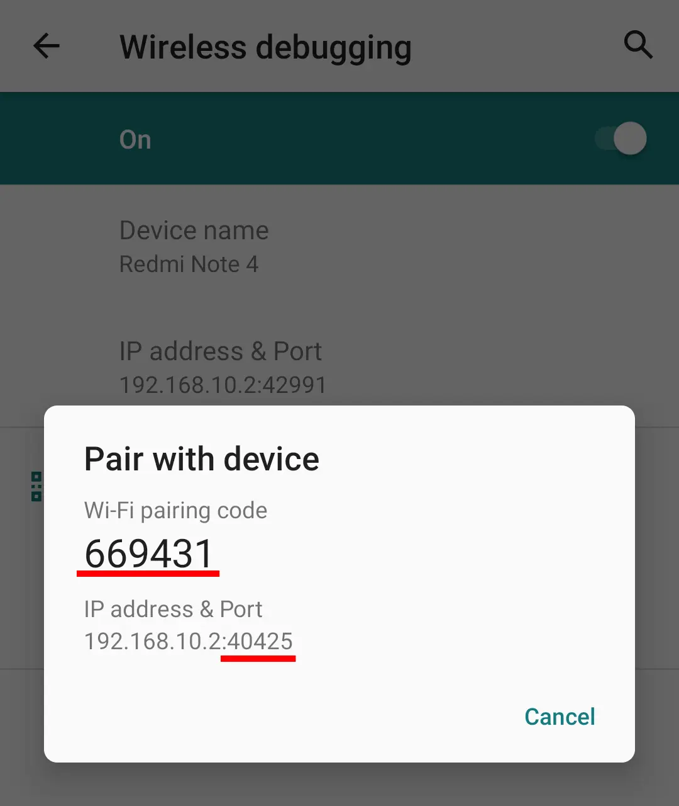
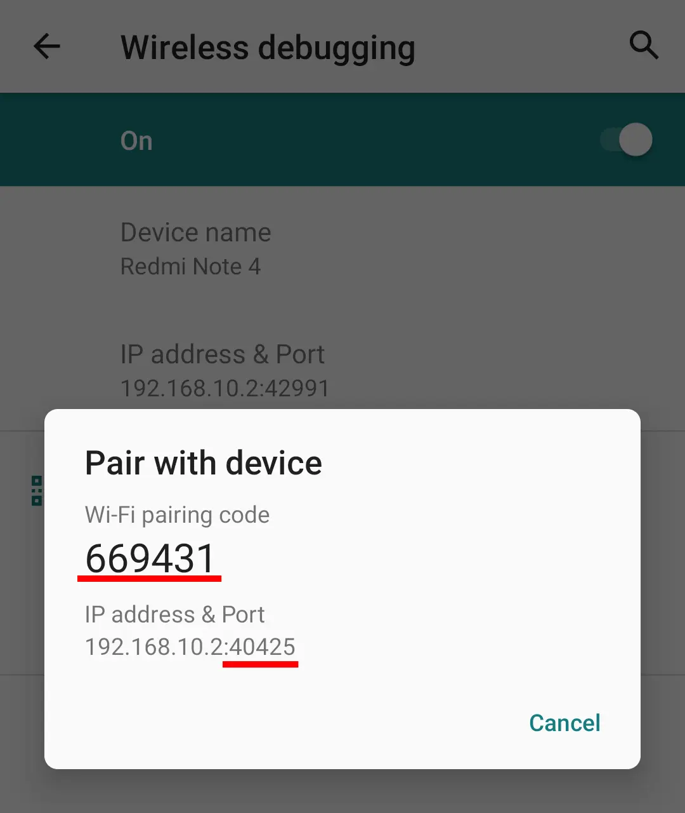

Android 11 及以上版本
说明
使用 Android 10 或更早版本？ 关注Android 10 指南。
在 Android 11 及以上版本上，可以在无需连接到 PC 的情况下打开无线调试功能。 有一个内置选项打开无线调试 (通过 Wi-Fi)。
mDNS 服务¶
Android 提供名为 mDNS （多播域名系统）的服务，用于在本地网络中发现服务。 adb 依赖此服务来发现设备，并在设备配对后自动连接。
如果 mDNS 服务运行正常，您无需手动输入配对和连接端口，只需输入 配对码 即可。 该应用程序通过 mDNS 服务自动发现端口。
如果您的设备上 mDNS 服务无法正常运行，可以尝试以下方法：
- 禁用无线调试（及USB调试）将强制启动
mdnsd服务（此操作在未获取root权限的情况下无法手动执行）。 - 强制停止应用程序将重新创建
mDNS广播监听器。
说明
在继续操作之前，请确保您已启用 开发者选项。
ADB 配对/连接¶
在开发者选项中启用无线调试，并检查禁用ADB授权超时，以避免重复重复配对步骤。

这是一个两步流程：
- 配对(需要配对端口和代码)
- 正在连接 (需要连接端口)
配对是一种认证机制，有点像蓝牙配对。 连接与 TCP/IP 连接。
 

有两个选项来执行配对和连接。 使用您发现更方便的地方。
配对方法1：通知¶
- 将您的设备连接到 Wi-Fi
- 打开应用并点击ADB访问1。 在配对选项1下，点击 “显示通知” 开始配对服务。 出现了通知。
- 在开发者选项中启用 无线调试 。
- 打开 无线调试 屏幕并点击 配对代码的配对设备。
- 注意(1)配对端口号，(2)配对代码，(3)连接端口号。
- 按要求输入通知中的三个参数。 输入每个值后按回车键/发送按钮。
配对是在您输入两个配对参数后进行的。 连接端口输入后立即执行。
信息
如果mDNS服务运行正常，您将无需手动输入配对和连接端口。
配对方法 2：分屏¶
- 将您的设备连接到 Wi-Fi
- 打开应用并点击ADB访问1。 点击 "打开开发者选项" 按钮打开同样的选项。
- 在开发者选项中启用 无线调试 。
- 打开 无线调试 屏幕并点击 配对代码的配对设备。
- 注意(1)配对端口号，(2)配对代码，(3)连接端口号。
- 切换到 Split-Screen 来同时打开应用程序和开发者选项。
- 在应用中，滚动到配对选项 2。
- 输入配对代码和端口，然后点击 "配对" "按钮。 配对已完成。
- 成功配对后，连接部分将被打开. 输入连接端口，然后点击 "连接" 按钮。 连接已完成。
信息
如果mDNS 服务 工作正确，您不需要手动输入配对和连接端口。 这些字段是自动填充的。
说明
您应该在开发者选项中启用 无线调试 或 USB 调试 。 禁用 ADB 将断开应用程序与 ADB 的连接。
ADB 依赖于Wi-Fi¶
配对时出现的一个问题是，您需要保持设备连接到 Wi-Fi 网络，以便保持无线调试 启用。 但设备可以断断开与 Wi-Fi 网络的连接，尤其是当屏幕关闭时。 在这种情况下，应用会失去ADB连接。 它可能令人沮丧。
这个问题有两个可能的解决办法：
-
同时启用USB调试以及无线调试，然后再进行配对。
-
或者在应用程序设置中勾选选项 自动切换到 TCP/IP 。 每次成功配对后，它都会在传统TCP/IP模式下重启ADB守护进程(
adbd)。
现在，每次配对后，您都可以关闭无线调试并启用USB调试。
第二种方法的另一个好处是，即使您关闭了 USB 调试， 只是打开它，应用程序应该连接到 ADB。 除非您重新启动设备，否则不需要重新配对。 这是因为当USB调试功能被禁用时，TCP/IP设置（系统属性： service.adb.tcp.port）不会被重置。 查看更多详情 here。